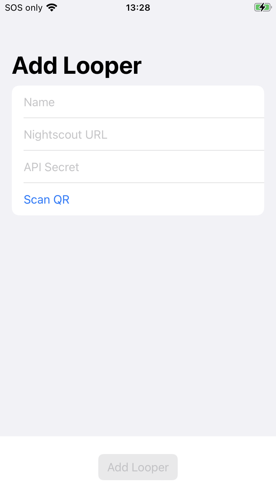

Loop Caregiver
Loop Caregiver ¶
The Loop Caregiver app is under development to make remote commands easier to implement and monitor.
Minimum Requirements:¶
- Loop version 3.2.0 or newer
- version 3.0 works but is not recommended for other reasons
- version 3.3 and higher offers improved feedback to the Loop Caregiver user
- iOS 16 for Loop Caregiver's phone
- iOS 15.1 with Loop 3 for Looper's phone
- Nightscout version 14.2.6
Prerequisites:¶
- Complete all 4 steps on the Remote Configuration page:
- Read the Remote Commands page and pay special attention to these 2 sections
Older Nightscout Versions
If you ignore this minimum version requirement - what happens:
- If you attempt to use the carb entry in the past or future, the caregiver app accepts it but the remote commands accepted by the Loopers phone show up at the current time - not when the caregiver intended to insert carbs
- Please take the time to update your Nightscout site to
master - Nightscout 14.2.6 was released 30-Sep-2022 as
Classic Liquorice
If you use Loop Caregiver, please join Loop Caregiver App Zulipchat stream.
As with all development code, monitor Zulipchat for announcements, report any problems you experience, be prepared to build frequently, and pay attention.
Build Loop Caregiver¶
You can build Loop Caregiver using the GitHub Browser Build method or the Mac-Xcode Build method.
GitHub Browser Build:¶
The GitHub Browser Build method is documented on the Other Apps page.
Mac-Xcode Build:¶
A build script is available to assist in building Loop Caregiver. This should be straightforward for anyone who has previously built Loop 3 using the script.
- Open a terminal window.
- Spot the line below that starts with
/bin/bash - Click the gray copy button () located near the bottom right side of that line (should say
Copy to Clipboardwhen you hover the mouse over it).
Once clicked, a confirmation message that saysCopied to Clipboardwill appear on your screen.Copy and Paste to start the BuildLoopCaregiver script/bin/bash -c "$(curl -fsSL https://raw.githubusercontent.com/loopandlearn/lnl-scripts/main/BuildLoopCaregiver.sh)" - Important: Click anywhere in the terminal before trying to paste
- Paste the line into the Terminal window.
- on Mac, you can do this in one of the following ways:
- Press Cmd+V
- or Press Ctrl+click and select
Pastefrom the menu - or select
Edit => Paste(i.e. click theEditmenu at the top of the Mac screen then clickPaste).
- on PC (Virtual Mac):
- Press Ctrl+V
- on Mac, you can do this in one of the following ways:
- Once the line is pasted, hit Return (Enter) to execute the script.
- The script displays the directions for downloading and building.
Please read them carefully.
Not Loop
The output you see in the Terminal may look very similar to when you build Loop 3 from a script.
It is pulling down a clone from a different location (LoopKit/LoopCaregiver). It uses some modules from Loop. The target and scheme are automatically selected for Loop Caregiver and if you follow directions for a paid Developer account, the signing is automatic.
Use Loop Caregiver¶
Some limited directions for using the Loop Caregiver app are provided - please also read the Zulipchat stream to stay up-to-date with improvements - especially if you are using a development branch of Loop.
Loop Caregiver Add Looper¶
You must add a Looper to continue with Loop Caregiver as shown in the graphic below.

-
On the Looper's phone:
- Tap on
Loop -> Settings -> Services -> Nightscout - Tap on the
One-Time-Passwordrow to see the QR code
Pro-tip
Take a screenshot of the QR code and store it on your computer.
You can then add the QR code to Loop Caregiver without bothering your Looper.
- Keep the screenshot secure
- Do not share the QR screenshot when asking for help
- Tap on
-
On the Loop Caregiver's phone:
- Tap on Loop Caregiver ->
Settings - Enter the name of the Looper, the Nightscout URL (use https://) and
API_SECRET - Touch the QR code row - this opens the camera - point the camera at the QR code from Looper's phone
- Tap on Loop Caregiver ->
You can add additional Looper's under settings. (Loop Caregiver can monitor more than one Looper).
Loop Caregiver Main Screen¶
Loop Caregiver uses a lot of features from Loop with some Nightscout-like features in the Timeline.
The Timeline:
- Autoscales the vertical display for glucose reported over the last 24 hours (plus the forecast if that is turned on)
Show Predictionfor Timeline is turned off in the graphic below.
- Horizontal display can be adjusted using the dropdown hours selector and scrolling left/right.
- A double tap on the Timeline alternates between 1 and 6 hour display

You can also use the Loop Caregiver -> Settings screen to modify:
- Units used for glucose display:
mg/dLormmol/L - Include the Loop forecast display on the Timeline chart as well as the Glucose chart of the main display (
Show Predictionis turned off in the graphic above)
Issue Remote Commands with Loop Caregiver¶
You issue override, carb, and bolus commands using a toolbar similar to the one seen on Loop. In the example graphic above, the carb and bolus entries visible were issued remotely.
Carb and bolus commands each require authorization before they are accepted. The authorization (FaceID, Fingerprint, or passcode) matches that required to unlock the Loop Caregiver's phone.
The use of Loop Caregiver makes remote commands much easier and more reliable.
Go back and review the details about Remote Commands before using the app.
Troubleshooting¶
Troubleshooting steps are found on the Remote Errors page.